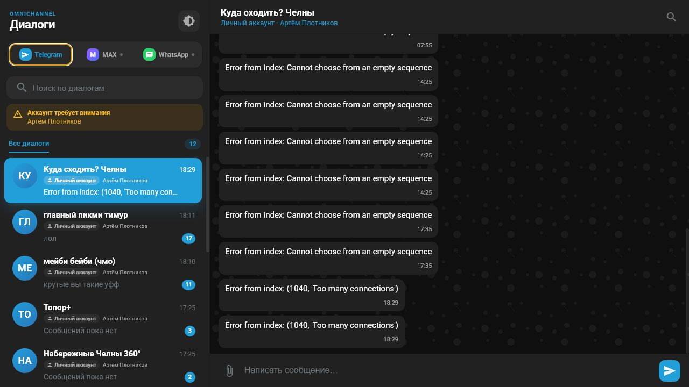
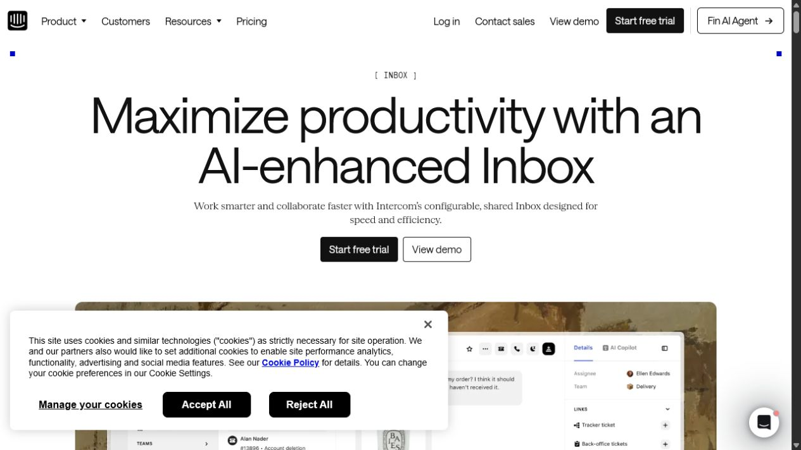
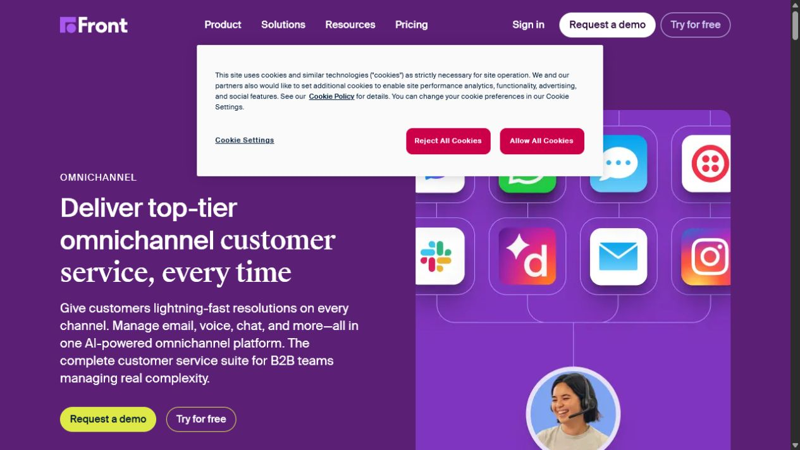

Единое рабочее место оператора
Фокус аудита: быстрее отличать канал и источник Telegram, убрать шум системных предупреждений и подготовить интерфейс к MAX и WhatsApp без ложного ощущения готовой интеграции.
Текущий обновлённый экран
Сильная основа — привычная двухпанельная модель. Главные изменения строятся вокруг ясной иерархии: канал → тип аккаунта → диалог → сообщение.

Что было не так
Системный шум
Было: ошибка появлялась каждые 3 секунды, а один аккаунт повторялся по числу его чатов.
Стало: один спокойный индикатор, уникальные аккаунты, автоматическое исчезновение после восстановления.
Источник не читался
Было: бот и личный Telegram выглядели одинаково.
Стало: компактные бейджи «Бот» / «Личный аккаунт», имя подключения и отдельная форма аватара бота.
Каналы смешивались с будущими функциями
Было: интерфейс был только Telegram, масштабирование не просматривалось.
Стало: постоянный переключатель каналов, плавная смена палитры и честные пустые состояния для будущих интеграций.
Приоритет обращений
Было: сортировка только по времени.
Стало: обращения из бота закреплены первым блоком, внутри блока сохраняется сортировка по активности.
Эскиз принятой иерархии
Референсы

Intercom Inbox
Взяты: ясная рабочая иерархия, спокойные состояния и разделение служебной информации от переписки.
Официальная страница
Front Omnichannel Inbox
Взяты: единая точка входа для каналов, высокая плотность списка без потери читаемости.
Официальная страницаСледующий UX-слой
После подключения MAX/WhatsApp логично добавить единые фильтры «непрочитанные / мои / без ответа», SLA-индикатор времени ожидания и карточку клиента справа. Сейчас они намеренно не добавлены, чтобы не перегружать первый рабочий этап.